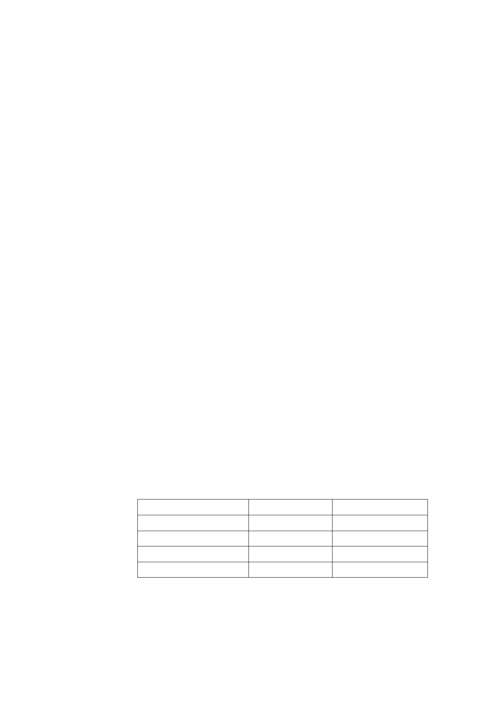

表示「不願意繼續推動土地開發案」者，人數 55 人，占
全部私有土地所有權人數比例為 53.4%，其土地占全部
私有土地面積比例為 51.7%。基於用地範圍內私有土地
所有權人參與意願偏低，且公益上之必要性、開發範圍
之合理性、經費之編列及作業時程等各方面均不利於本
府繼續推動，經捷運工程局簽報市府同意依都市計畫法
第 27 條第 1 項第 4 款規定，回復原都市計畫使用分區，
爰辦理本次都市計畫變更。
二、計畫範圍：
本計畫範圍位於延平北路以西、民權西路 245 巷以東、
延平北路三段 18 巷以南、民權西路以北所圍街廓，含括
本市大同區橋北段三小段 586 地號等 103 筆土地，基地
面積合計 4569.82 平方公尺。
三、計畫內容：
(一)主要計畫：變更「聯合開發區（捷）」為「商業區」（1045.82
㎡）、「住宅區」（3524 ㎡）。
(二)細部計畫：
1.擬定土地使用：第三種商業區、第四種住宅區、第三
種住宅區、第三之二種住宅區
2.土地使用分區管制：
土地使用分區
第三種商業區*註
第四種住宅區
第三種住宅區
第三之二種住宅區*註
法定建蔽率
不得超過 65％
不得超過 50％
不得超過 45％
不得超過 45％
法定容積率
不得超過 560％
不得超過 300％
不得超過 225％
不得超過 400％
3.都市設計準則：
本計畫區基地開發應經「臺北市都市設計及土地
使用開發許可審議委員會」審議通過後，始得核發建
第 15 頁 / 共 25 頁